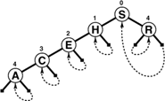
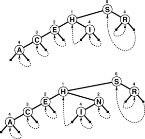
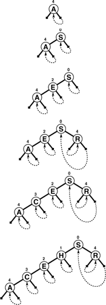
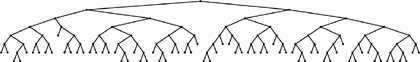

C++ Programming Robert Sedgewick - Princeton University Addison Wesley Professional Algorithms in C++, Parts 1–4: Fundamentals, Data Structure, Sorting, Searching, Third Edition
15.3. Patricia Tries
Trie-based search as described in Section 15.2 has two inconvenient flaws. First, the one-way branching leads to the creation of extra nodes in the trie, which seem unnecessary. Second, there are two different types of nodes in the trie, which leads to complications (see Exercises 15.20 and 15.21). In 1968, Morrison discovered a way to avoid both of these problems, in a method that he named patricia("practical algorithm to retrieve information coded in alphanumeric"). Morrison developed his algorithm in the context of string-indexing applications of the type that we shall consider in Section 15.5, but it is equally effective as a symbol-table implementation. Like DSTs, patricia tries allow search for N keys in a tree with just N nodes; like tries, they require only about lg N bit comparisons and one full key comparison per search, and they support other ADT operations. Moreover, these performance characteristics are independent of key length, and the data structure is suitable for variable-length keys.
Starting with the standard trie data structure, we avoid one-way branching via a simple device: we put into each node the index of the bit to be tested to decide which path to take out of that node. Thus, we jump directly to the bit where a significant decision is to be made, bypassing the bit comparisons at nodes where all the keys in the subtree have the same bit value. Moreover, we avoid external nodes via another simple device: we store data in internal nodes and replace links to external nodes with links that point back upwards to the correct internal node in the trie. These two changes allow us to represent tries with binary trees comprising nodes with a key and two links (and an additional field for the index), which we call patricia tries. With patricia tries, we store keys in nodes as with DSTs, and we traverse the tree according to the bits of the search key, but we do not use the keys in the nodes on the way down the tree to control the search; we merely store them there for possible later reference, when the bottom of the tree is reached.
As hinted in the previous paragraph, it is easier to follow the mechanics of the algorithm if we first take note that we can regard standard tries and patricia tries as different representations of the same abstract trie structure. For example, the tries in Figure 15.10 and at the top in Figure 15.11, which illustrate search and insertion for patricia tries, represent the same abstract structure as do the tries in Figure 15.6. The search and insertion algorithms for patricia tries use, build, and maintain a concrete representation of the abstract trie data structure different from the search and insertion algorithms discussed in Section 15.2, but the underlying trie abstraction is the same.
In a successful search for R = 10010 in this sample patricia trie (top), we move right (since bit 0 is 1), then left (since bit 4 is 0), which brings us to R (the only key in the tree that begins with 1***0). On the way down the tree, we check only the key bits indicated in the numbers over the nodes (and ignore the keys in the nodes). When we first reach a link that points up the tree, we compare the search key against the key in the node pointed to by the up link, since that is the only key in the tree that could be equal to the search key. In an unsuccessful search for I = 01001, we move left at the root (since bit 0 of the key is 0), then take the right (up) link (since bit 1 is 1) and find that H (the only key in the trie that begins with 01) is not equal to I.

To insert I into the sample patricia trie in Figure 15.10, we add a new node to check bit 4, since H = 01000 and I = 01001 differ in only that bit (top). On a subsequent search in the trie that comes to the new node, we want to check H (left link) if bit 4 of the search key is 0; if the bit is 1 (right link), the key to check is I. To insert N = 01110 (bottom), we add a new node in between H and I to check bit 2, since that bit distinguishes N from H and I.

Program 15.4 is an implementation of the patricia-trie search algorithm. The method differs from trie search in three ways: there are no explicit null links, we test the indicated bit in the key instead of the next bit, and we end with a search key comparison at the point where we follow a link up the tree. It is easy to test whether a link points up, because the bit indices in the nodes (by definition) increase as we travel down the tree. To search, we start at the root and proceed down the tree, using the bit index in each node to tell us which bit to examine in the search key—we go right if that bit is 1, left if it is 0. The keys in the nodes are not examined at all on the way down the tree. Eventually, an upward link is encountered: each upward link points to the unique key in the tree that has the bits that would cause a search to take that link. Thus, if the key at the node pointed to by the first upward link encountered is equal to the search key, then the search is successful; otherwise, it is unsuccessful.
Program 15.4. Patricia-trie search|
The recursive function searchR returns the unique node that could contain the record with key v. It travels down the trie, using the bits of the tree to control the search, but tests only 1 bit per node encountered—the one indicated in the bit field. It terminates the search when it encounters an external link, one which points up the tree. The search function search calls searchR, then tests the key in that node to determine whether the search is a hit or a miss.
private:
Item searchR(link h, Key v, int d)
{
if (h->bit <= d) return h->item;
if (digit(v, h->bit) == 0)
return searchR(h->l, v, h->bit);
else return searchR(h->r, v, h->bit);
}
public:
Item search(Key v)
{ Item t = searchR(head, v, -1);
return (v == t.key()) ? t : nullItem;
}
|
Figure 15.10 illustrates search in a patricia trie. For a miss due to the search taking a null link in a trie, the corresponding patricia trie search will take a course somewhat different from that of standard trie search, because the bits that correspond to one-way branching are not tested at all on the way down the trie. For a search ending at a leaf in a trie, the patricia-trie search ends up comparing against the same key as the trie search, but without examining the bits corresponding to one-way branching in the trie.
The implementation of insertion for patricia tries mirrors the two cases that arise in insertion for tries, as illustrated in Figure 15.11. As usual, we gain information on where a new key belongs from a search miss. For tries, the miss can occur either because of a null link or because of a key mismatch at a leaf. For patricia tries, we need to do more work to decide which type of insertion is needed, because we skipped the bits corresponding to one-way branching during the search. A patricia-trie search always ends with a key comparison, and this key carries the information that we need. We find the leftmost bit position where the search key and the key that terminated the search differ, then search through the trie again, comparing that bit position against the bit positions in the nodes on the search path. If we come to a node that specifies a bit position higher than the bit position that distinguishes the key sought and the key found, then we know that we skipped a bit in the patricia-trie search that would have led to a null link in the corresponding trie search, so we add a new node for testing that bit. If we never come to a node that specifies a bit position higher than the one that distinguishes the key sought and the key found, then the patricia-trie search corresponds to a trie search ending in a leaf, and we add a new node that distinguishes the search key from the key that terminated the search. We always add just one node, which references the leftmost bit that distinguishes the keys, where standard trie insertion might add multiple nodes with one-way branching before reaching that bit. That new node, besides providing the bit-discrimination that we need, will also be the node that we use to store the new item. Figure 15.12 shows the initial stages of the construction of a sample trie.
This sequence depicts the result of inserting the keys A S E R C H into an initially empty patricia trie. Figure 15.11 depicts the result of inserting I and then N into the tree at the bottom.

Program 15.5 is an implementation of the patricia-trie–insertion algorithm. The code follows directly from the description in the previous paragraph, with the additional observation that we view links to nodes with bit indices that are not larger than the current bit index as links to external nodes. The insertion code merely tests this property of the links, but does not have to move keys or links around at all. The upward links in patricia tries seem mysterious at first, but the decisions about which links to use when each node is inserted are surprisingly straightforward. The end result is that using one node type rather than two simplifies the code substantially.
Program 15.5. Patricia-trie insertion|
To insert a key into a patricia trie, we begin with a search. The function searchR from Program 15.4 gets us to a unique key in the tree that must be distinguished from the key to be inserted. We determine the leftmost bit position at which this key and the search key differ, then use the recursive function insertR to travel down the tree and to insert a new node containing v at that point.
In insertR, there are two cases, corresponding to the two cases illustrated in Figure 15.11. The new node could replace an internal link (if the search key differs from the key found in a bit position that was skipped), or an external link (if the bit that distinguishes the search key from the found key was not needed to distinguish the found key from all the other keys in the trie).
private:
link insertR(link h, Item x, int d, link p)
{ Key v = x.key();
if ((h->bit >= d) || (h->bit <= p->bit))
{
link t = new node(x); t->bit = d;
t->l = (digit(v, t->bit) ? h : t);
t->r = (digit(v, t->bit) ? t : h);
return t;
}
if (digit(v, h->bit) == 0)
h->l = insertR(h->l, x, d, h);
else h->r = insertR(h->r, x, d, h);
return h;
}
public:
void insert(Item x)
{ Key v = x.key(); int i;
Key w = searchR(head->l, v, -1).key();
if (v == w) return;
for (i = 0; digit(v, i) == digit(w, i); i++) ;
head->l = insertR(head->l, x, i, head);
}
ST(int maxN)
{ head = new node(nullItem);
head->l = head->r = head; }
|
Program 15.6. Patricia-trie sort|
This recursive procedure shows the records in a patricia trie in order of their keys. We imagine the items to be in (virtual) external nodes, which we can identify by testing when the bit index on the current node is not larger than the bit index on its parent. Otherwise, this program is a standard inorder traversal.
private:
void showR(link h, ostream& os, int d)
{
if (h->bit <= d) { h->item.show(os); return; }
showR(h->l, os, h->bit);
showR(h->r, os, h->bit);
}
public:
void show(ostream& os)
{ showR(head->l, os, -1); }
|
By construction, all external nodes below a node with bit index k begin with the same k bits (otherwise, we would have created a node with bit index less than k to distinguish two of them). Therefore, we can convert a patricia trie to a standard trie by creating the appropriate internal nodes between nodes where bits are skipped and by replacing links that point up the tree with links to external nodes (see Exercise 15.48). However, Property 15.2 does not quite hold for patricia tries, because the assignment of keys to internal nodes does depend on the order in which the keys are inserted. The structure of the internal nodes is independent of the key-insertion order, but external links and the placement of the key values are not.
An important consequence of the fact that a patricia trie represents an underlying standard trie structure is that we can use a recursive inorder traversal to visit the nodes in order, as demonstrated in the implementation given in Program 15.6 We visit just the external nodes, which we identify by testing for nonincreasing bit indices.
Patricia is the quintessential radix search method: it manages to identify the bits that distinguish the search keys and to build them into a data structure (with no surplus nodes) that quickly leads from any search key to the only key in the data structure that could be equal to the search key. Figure 15.13 shows the patricia trie for the same keys used to build the trie of Figure 15.9—the patricia trie not only has 44 percent fewer nodes than the standard trie, but also is nearly perfectly balanced.
This patricia trie, built by insertion of about 200 random keys, is equivalent to the trie of Figure 15.9 with one-way branching removed. The resulting tree is nearly perfectly balanced.

Property 15.5. Insertion or search for a random key in a patricia trie built from N random bitstrings requires about lgN bit comparisons on the average, and about 2lg N bit comparisons in the worst case. The number of bit comparisons is never more than the length of the key|
This fact is an immediate consequence of Property 15.3, since paths in patricia tries are no longer than paths in the corresponding trie. The precise average-case analysis of patricia is difficult; it turns out that patricia involves one fewer comparison, on the average, than does a standard trie (see reference section).
|
Table 15.1 gives empirical data supporting the conclusion that DSTs, standard binary tries, and patricia tries have comparable performance (and that they provide search times comparable to or shorter than the balanced-tree methods of Chapter 13) when keys are integers, and certainly should be considered for symbol-table implementations even with keys that can be represented as short bitstrings, taking into account the various straightforward tradeoffs that we have noted.
Table 15.1. Empirical study of trie implementationsThese relative timings for construction and search in symbol tables with random sequences of 32-bit integers confirm that digital methods are competitive with balanced-tree methods, even for keys that are random bits. Performance differences are more remarkable when keys are long and are not necessarily random (see Table 15.2), or when careful attention is paid to making the key-bit–access code efficient (see Exercise 15.22). | | | construction | search hits | N | B | D | T | P | B | D | T | P | 1250 | 1 | 1 | 1 | 1 | 0 | 1 | 1 | 0 | 2500 | 2 | 2 | 4 | 3 | 1 | 1 | 2 | 1 | 5000 | 4 | 5 | 7 | 7 | 3 | 2 | 3 | 2 | 12500 | 18 | 15 | 20 | 18 | 8 | 7 | 9 | 7 | 25000 | 40 | 36 | 44 | 41 | 20 | 17 | 20 | 17 | 50000 | 81 | 80 | 99 | 90 | 43 | 41 | 47 | 36 | 100000 | 176 | 167 | 269 | 242 | 103 | 85 | 101 | 92 | 200000 | 411 | 360 | 544 | 448 | 228 | 179 | 211 | 182 | Key:
B Red–black BST (Programs 12.8 and 13.6)
|
D DST (Program 15.1) T Trie (Programs 15.2 and 15.3) P Patricia trie (Programs 15.4 and 15.5) |